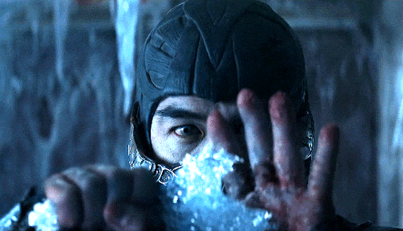

Sub-Zero é o pseudônimo de dois personagens da franquia de jogos eletrônicos Mortal Kombat, um dos quais estava entre os personagens originais do primeiro título, lançado em 1992. O personagem é descrito como formidável e que possui a inata habilidade de controlar o gelo de diversas formas, bem como sua rivalidade com Scorpion. Após os eventos do primeiro torneio, revela-se que o primeiro Sub-Zero (Bi-Han) havia sido morto, sendo substituído por seu irmão mais novo a partir de Mortal Kombat II. Enquanto isso, Bi-Han renasceu como espectro Noob Saibot. Este último, inclusive, obteve seu próprio título derivado, intitulado Mortal Kombat Mythologies: Sub-Zero. Ambos foram bem recebidos pela crítica e pelos fãs.

Raiden (também conhecido como Lord Raiden) é um personagem da série de jogos eletrônicos de luta criada por Ed Boon e John Tobias, Mortal Kombat. Um dos sete personagens jogáveis do primeiro jogo da série, Raiden é o Deus do Trovão e protetor do reino da Terra, com frequência liderando as forças do bem contra o mal e servindo de mentor para os personagens terráqueos como Liu Kang. Nas batalhas mais grandiosas, ele deixa o seu status de entidade divina e toma uma forma humana intervindo, lutando contra as forças mais poderosas do mal. Sendo um deus, ele tem muitas habilidades sobrenaturais, como teleportar-se, controlar raios e voar.

Scorpion (nascido: Hanzo Hasashi) é um personagem jogável da franquia Mortal Kombat, criada pela Midway Games. Estreando como um dos sete personagens jogáveis originais do primeiro título, Mortal Kombat. Scorpion é o espectro de um ninja que busca vingar a própria morte, a destruição de seu clã e a morte de sua família, fazendo dele um anti-herói, seu papel principal durante toda a série até Mortal Kombat X.